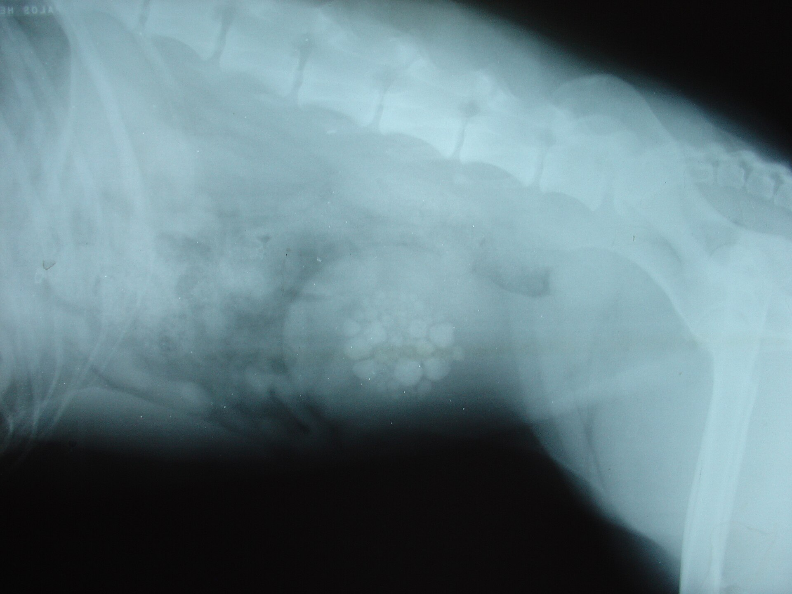
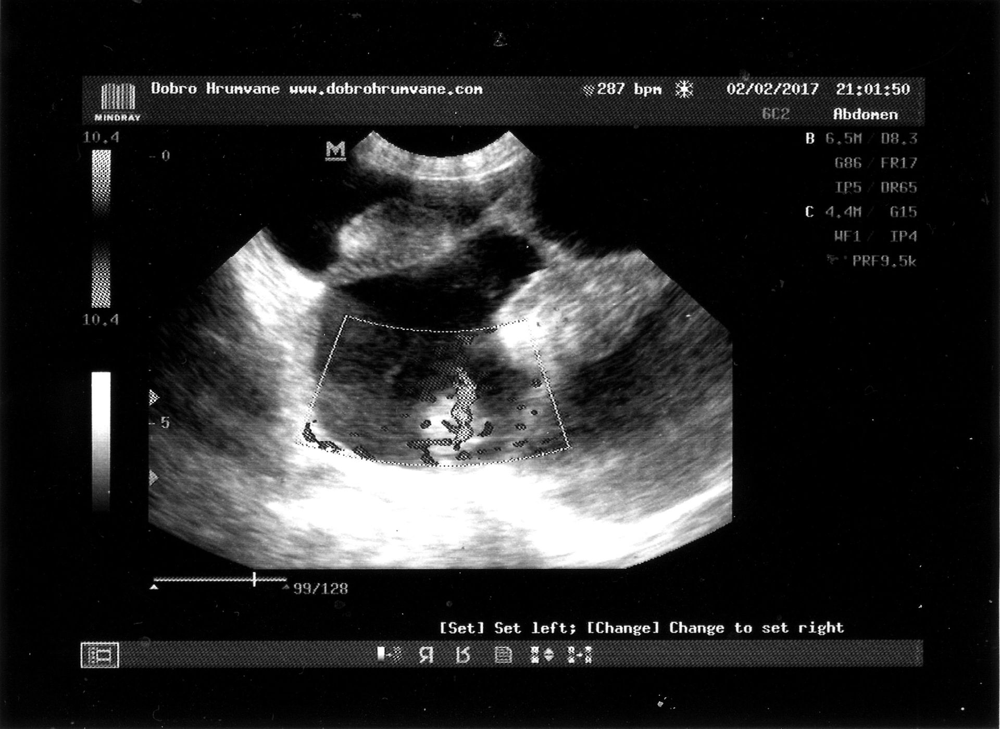
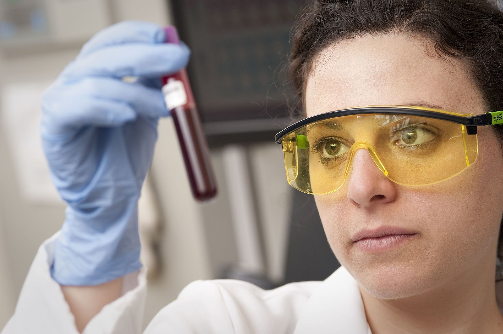
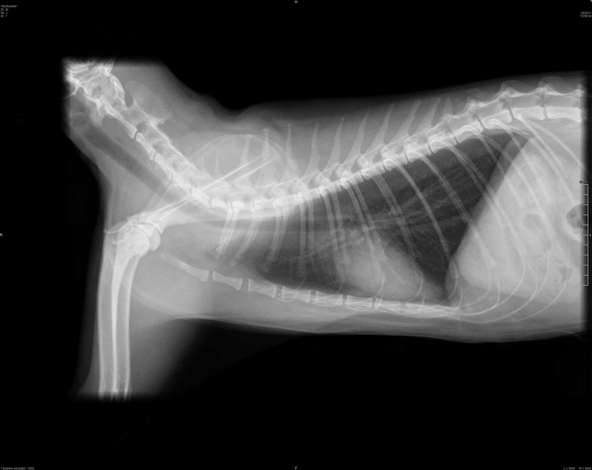

Bilder som svarar när undersökningen inte gör det
Vi tar 1 240 bilder om året i huset på Klinikvägen 12. Den digitala röntgenbilden ligger färdig på skärmen efter 2 minuter, och ultraljudet visar organen i rörelse medan du sitter kvar i rummet. Nio av tio undersökningar ger ett svar innan du har hunnit hämta kappan. Bilderna mejlas samma dag och sparas i journalen i minst 5 år.
Bilddiagnostik
Digital röntgen på två minuter
En röntgenbild tas på under 2 minuter. Apparaten står i ett eget rum intill undersökningsrummet, och djuret är tillbaka hos dig medan veterinären tittar på bilden på skärmen. Hundar över 20 kilo lyfts upp på bordet av två personer, så att inget ben vrids under lyftet.
Bilder utan att djuret sövs
Skelett och bröstkorg går att röntga på ett vaket djur. Det kräver att djuret ligger stilla i 10 till 30 sekunder, vilket de flesta klarar med en hand på ryggen och lite tålamod. Buk och leder är svårare, eftersom vi behöver tre vinklar av samma område och djuret ska andas lugnt under tiden.
Ultraljudet fungerar tvärtom. Där är det vi som rör sonden över huden, och djuret kan ligga hos dig under hela undersökningen. Vi ser mjuka organ som lever, njurar, mjälte och hjärta i rörelse, vilket en röntgenbild inte kan visa. Pälsen rakas över ett område på 10 gånger 10 centimeter, och du får en tub gel med hem om huden blir torr.
Så läser vi bilden
- Ben och leder. En spricka syns som en tunn mörk linje i det ljusa benet. Vi jämför alltid med andra sidan, eftersom en frisk led och en skadad kan se lika ut på en enskild bild.
- Bröstkorgen. Hjärtats bredd mäts mot bröstkorgens bredd och jämförs med raskurvan. En hund med hosta i 3 veckor får sin bild bedömd samma dag, även om hostan visar sig sitta i luftrören.
- Mjuka organ. Lever, njurar, urinblåsa och tarmar bedöms i storlek och form. Hittar vi en förändring som kräver kontrast eller skiktröntgen bokar vi det åt dig inom 5 dagar.

Priser
Priser för bilddiagnostik
Fyra undersökningar, alla till fast pris. Lugnande och smärtlindring ingår där det behövs. Behöver vi ta fler bilder än planerat ringer vi dig innan vi går vidare.
| Undersökning | Omfattning | Pris |
|---|---|---|
| Röntgen buk | Två till tre bilder i olika vinklar, 20 minuter på bordet. Lugnande ingår vid behov. | 3 200 kr |
| Röntgen skelett | Fyra bilder av benet eller leden som undersöks. Svar och bilder samma dag. | 3 200 kr |
| Ultraljud buk | Lever, njurar, urinblåsa och tarmar granskas under 25 minuter. Du sitter med i rummet. | 2 400 kr |
| Ultraljud hjärta | Hjärtat mäts i fem vyer och bedöms skriftligt samma dag. Kan skickas till kardiolog. | 3 900 kr |
Tandröntgen kostar 1 200 kr och beskrivs på sidan om tandvård. Behöver djuret lugnande läkemedel tillkommer 450 till 900 kr beroende på vikt, och för hundar över 25 kilo gör vi en skriftlig kostnadsuppskattning innan vi börjar. Både dos och pris styrs av vikten, och kalkylen på prissidan räknar ut summan.
Besöket
Från beslut till svar
Hela besöket tar 30 till 60 minuter. Är du bokad för ultraljud kan du oftast räkna med att vara hemma igen inom 2 timmar.
-
Steg 1
Undersökning och beslut
Veterinären känner igenom djuret och lyssnar på hjärta och lungor. Efter 10 minuter vet vi om röntgen, ultraljud eller båda behövs, och varför. Du får höra vad vi letar efter innan bilden tas.
-
Steg 2
Lugnande eller smärtlindring
Ett djur som spänner sig ger suddiga bilder. Vi ger därför lugnande i en muskel, och det verkar inom 10 minuter. Har djuret ont får det smärtlindring samtidigt, så att undersökningen inte gör ont.
-
Steg 3
Bildtagning
Röntgenbilden ligger på skärmen efter 2 minuter. Ultraljudet tar 20 till 30 minuter eftersom vi går igenom organen i tur och ordning och mäter dem. Vi tar 6 till 12 bilder per undersökning och sparar dem alla i journalen.
-
Steg 4
Svar och bilder samma dag
Du får beskedet muntligt i rummet och skriftligt på mejl före klockan 18 samma dag. Bilderna följer med i samma mejl. Behöver vi röntga om eller ta ett blodprov till gör vi det innan du åker hem.

Lugn och smärtlindring före bilden
En orolig hund rör på huvudet precis när bilden tas. Då blir bilden suddig, vi får ta om den, och djuret ligger på ett kallt bord längre än nödvändigt. Därför ger vi hellre lugnande i tid än tar om samma bild 3 gånger. Medlet ges i en muskel i låret eller i nacken och verkar inom 10 minuter.
Personal lämnar rummet när bilden tas, och den som håller i djuret har strålförkläde och dosimeter. En röntgenbild av buken ger en dos på 0,1 till 0,3 millisievert. Det motsvarar ungefär vad en människa får vid en vanlig tandröntgen, och dosen är lägre än den strålning ett flyg Stockholm till Bangkok ger.
Efter undersökningen sover djuret bort medlet i 4 till 6 timmar. Det går att hämta efter 3 timmar om det klarar att gå själv, men räkna med att hunden är vinglig och vill sova resten av dagen. Kör inte bil med djuret löst i bilen, och låt det inte gå i trappor förrän nästa morgon.
Fastande djur
Inför bukultraljud vill vi ha 8 timmars fasta på mat, medan vatten får stå framme. Är djuret under 6 månader kortar vi fastan till 4 timmar.
Röntgen av skelett eller bröstkorg kräver ingen fasta alls. Har djuret diabetes eller äter medicin dagligen får du råd om tabletterna när du bokar.
Laboratoriet intill
Provet tas i samma besök
Blodprovet tas i rummet bredvid innan djuret har hunnit bli oroligt, ofta i samband med att nålen för det lugnande läkemedlet sätts. Vi behöver 1 till 3 milliliter blod, beroende på hur många analyser som ska köras. Ett rör räcker för de flesta beställningar.
Svar medan du väntar
Analyserna körs på klinikens egen maskin och svaret ligger färdigt efter 20 minuter. Det gör att vi kan läsa provsvaret tillsammans med röntgenbilden i samma besök, i stället för att du ska ringa efter en vecka. Prover som kräver odling skickas till ett laboratorium och svarar inom 3 dagar.
Analyser vi kör på plats
- Blodstatus. Antal röda och vita blodkroppar samt trombocyter. Lågt antal röda blodkroppar hos en hund med bleka slemhinnor är en av de vanligaste orsakerna till att vi röntgar buken samma dag.
- Lever- och njurvärden. Fyra värden som visar hur organen arbetar, och som vi alltid tar före lugnande medel på djur över 8 år. Provet tar 20 minuter och kostar 690 kr.
- Sköldkörtel och blodsocker. Två analyser som förklarar trötthet respektive ökad törst. Blodsockret följs dessutom var 15:e minut under en kurva som tar 2 timmar.

Siffror
Bilddiagnostik i siffror
Siffrorna avser helåret 2025 och kommer från klinikens egna journaler.
bildtagningar per år, varav knappt 300 är ultraljud. Resten är digital röntgen.
från att bilden tas till att den ligger färdig på skärmen i undersökningsrummet.
är medianväntetiden för blodprov och urinprov som analyseras på kliniken.
av undersökningarna ger ett svar direkt i rummet, utan att du behöver boka ett nytt besök.
Källa: klinikens bilddiagnostiska statistik 2025, sammanställd av klinikchefen. Siffrorna räknas om en gång per år, i januari.
Så får du bilderna
Bilder i mejlen samma kväll
Bilderna skickas som bilagor i samma mejl som det skriftliga svaret, och de når dig före klockan 18 samma dag. Du behöver inte fråga efter dem och du betalar inget extra för utskrifter. Vill du hellre ha dem på papper skriver vi ut dem i receptionen, i storlek 20 gånger 25 centimeter.
Journalen är grunden
Alla bilder sparas i djurets journal i minst 5 år, och vi kan jämföra en ny bild med en som togs för 3 år sedan. Det gör det lätt att se om en förändring i ett organ växer eller står still. Begär du ut journalen får du bilderna med, utan kostnad.
Det här följer med hem
- Skriftligt svar. En sida med vad vi såg, vad det betyder och vad som händer härnäst. Tar 30 sekunder att läsa och du kan visa den för en annan veterinär.
- Bildfilerna. Mellan 6 och 12 bilder i full storlek, namngivna med datum och undersökning. Filerna är i formatet DICOM och går att öppna på de flesta kliniker.
- Kostnadsöversikt. Varje rad vi har tagit betalt för står med, så att beloppet på fakturan går att följa. Försäkringsbolaget får samma underlag direkt från oss om du vill.

Frågor och svar
Frågor om röntgen och ultraljud
Fem frågor vi får nästan varje dag, och svaren är desamma som veterinären ger i rummet.
Är röntgen farligt för djuret?
Nej, vid de doser vi arbetar med. En bild av buken ger 0,1 till 0,3 millisievert, vilket ligger under den strålning en människa får vid en vanlig tandröntgen. Personalen står bakom en skärmvägg och bär dosimeter, och vi tar aldrig fler bilder än undersökningen kräver. Är djuret dräktigt säger du till, för då väljer vi ultraljud i första hand.
Måste djuret vara fastande?
Inför bukultraljud vill vi ha 8 timmars fasta på mat, och vatten får stå framme hela tiden. Är djuret under 6 månader kortar vi fastan till 4 timmar, eftersom små valpar och kattungar inte klarar längre uppehåll. Röntgen av skelett och bröstkorg kräver ingen fasta alls, och morgonens tabletter tas som vanligt om inte veterinären sagt något annat.
Hur länge sitter det lugnande?
Effekten klingar av efter 4 till 6 timmar. De första 2 timmarna är djuret dåsigt och vill ligga, sedan blir det gradvis piggare. Du kan hämta djuret efter 3 timmar om det klarar att stå och gå själv, vilket de flesta gör. Undvik trappor och långa promenader samma kväll, och räkna med att aptiten kommer tillbaka först nästa morgon.
Får jag se bilderna själv?
Ja. Veterinären visar bilden på skärmen direkt i rummet och pekar ut det vi tittar på, oavsett om svaret är normalt eller inte. Samma kväll kommer bilderna till din e-post, normalt inom 3 timmar efter besöket och alltid före klockan 18. Bilderna sparas i journalen i minst 5 år, så du kan begära ut dem igen när du vill.
Remitterar ni vidare till djursjukhus?
Ibland, och då sköter vi kontakten. Skiktröntgen och magnetkameraundersökning finns inte i vårt hus, och de undersökningarna behöver ofta narkos i 60 till 90 minuter. Vi bokar tiden åt dig, skickar journal och bilder samma dag och får svar inom 2 till 5 dagar. Vid akuta skador skickar vi djuret direkt, och du får tiden för återbesöket hos oss i samma besked.
Boka bilddiagnostik
Berätta vad djuret har för symtom och hur länge de har suttit, så bokar vi rätt undersökning från början. Akuta skador tar vi emot samma dag på Klinikvägen 12, 118 46 Stockholm, och övriga tider finns oftast inom 3 dagar. Har djuret ätit nyligen går röntgen av skelett bra ändå. Mejla gärna ett tidigare provsvar i förväg till info@veterinar-djurklinik-stockholm.se, så är veterinären förberedd när du kommer.